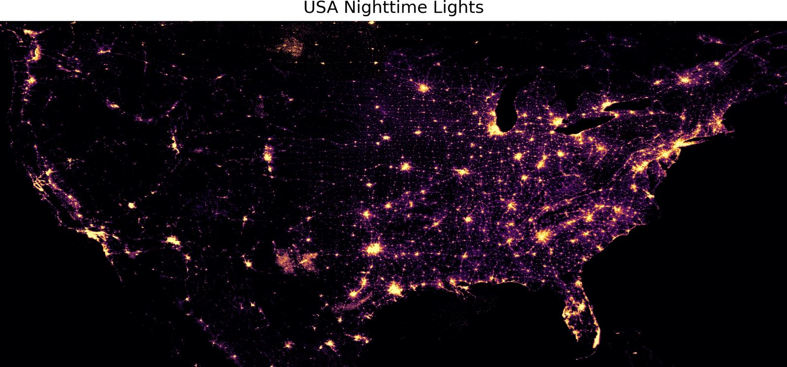
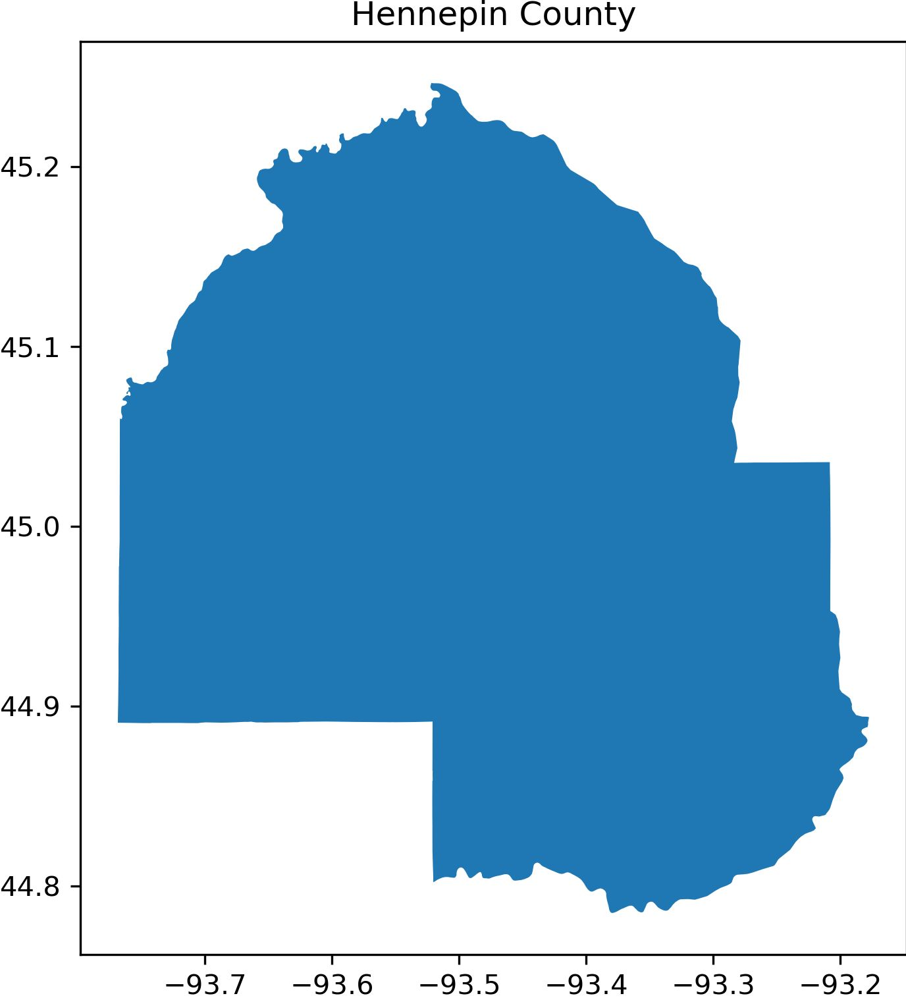
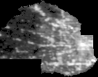

Figure 1. Nighttime lights across the contiguous United States from 2024 VIIRS annual composites.
This project investigates the potential of using nighttime satellite data to predict county-level poverty rates across the continental United States.
We use annual 2024 composites of nighttime-light data from the VIIRS sensor together with estimated county-level poverty rates from the Small Area Income and Poverty Estimates (SAIPE) program.
The project compares three major modeling approaches: handcrafted brightness regression, CNN embedding-based hybrid regression, and an improved CNN embedding hybrid regression framework.
The best-performing model was Random Forest regression on CNN embeddings, achieving an R² of approximately 0.141.
These results suggest that spatial patterns in nighttime lights contain socioeconomic information beyond simple aggregate brightness statistics, while also highlighting the complexity of poverty-rate prediction.
Nighttime satellite imagery has been widely used as an indicator of economic activity, urbanization, infrastructure development, electricity consumption, and population density.
However, predicting poverty rates from satellite imagery is more challenging than estimating aggregate measures such as GDP. Poverty is affected by many socioeconomic factors that may not be directly observable from nighttime illumination alone.
This project therefore investigates whether learned spatial representations of nighttime-light imagery can provide useful socioeconomic information beyond simple brightness statistics.
The analysis combines three major datasets.
The analysis was restricted to counties in the continental United States, excluding Alaska and Hawaii. County boundaries and poverty-rate records were aligned using county FIPS codes.

Figure 1. Nighttime lights across the contiguous United States from 2024 VIIRS annual composites.
The preprocessing pipeline was designed to preserve meaningful spatial information while standardizing county-level image inputs. Because U.S. counties vary substantially in geographic size and shape, the preprocessing process avoids distortion-based resizing whenever possible.
| Step | Description |
|---|---|
| 1 | Load and preview the global VIIRS nighttime-light raster |
| 2 | Restrict the raster to the continental United States |
| 3 | Load 2024 TIGER/Line U.S. county boundaries |
| 4 | Spatially clip the nighttime-light raster for each county |
| 5 | Apply grayscale conversion and background compositing |
| 6 |
Apply logarithmic brightness transformation using
log1p
|
| 7 | Preserve county aspect ratio and proportionally resize |
| 8 | Pad images to standardized 64 × 64 model inputs |
A logarithmic intensity transformation was applied to reduce the influence of extremely bright urban regions:
where I(x) represents the original nighttime-light pixel intensity.
The following example illustrates how a county's geographic boundary is converted into a standardized nighttime-light image while preserving its spatial structure.

County Boundary
Hennepin County polygon

Processed Nighttime-Light Image
County-level model input
Figure 2. Example county preprocessing pipeline. Left: Hennepin County geographic boundary. Right: processed county-level nighttime-light image.
Model 1 serves as a traditional statistical baseline using handcrafted brightness statistics rather than learned image representations.
Extracted features include:
Linear Regression and Random Forest Regression were evaluated.
Model 2 introduces learned spatial representations through a convolutional neural network.
The CNN consists of three convolutional blocks with channel sizes of 16, 32, and 64, together with batch normalization, max pooling, ReLU activations, adaptive average pooling, and dropout regularization.
Instead of relying only on direct end-to-end CNN regression, embeddings learned by the CNN are passed into downstream Ridge Regression and Random Forest Regression models.
Model 3 extends the hybrid CNN framework through improved image preprocessing, representation learning, and downstream regression.
The final Random Forest model uses 500 trees with a maximum depth of 10.
| Model | MAE | RMSE | R² |
|---|---|---|---|
| Linear Regression | 3.80 | 4.94 | 0.087 |
| Random Forest | 3.86 | 5.03 | 0.056 |
| Model | MAE | RMSE | R² |
|---|---|---|---|
| End-to-End CNN | 3.93 | 5.25 | 0.067 |
| Ridge on CNN Embeddings | 3.87 | 5.16 | 0.100 |
| RF on CNN Embeddings | 3.86 | 5.12 | 0.115 |
| Model | MAE | RMSE | R² |
|---|---|---|---|
| Ridge Handcrafted | 4.34 | 5.77 | 0.020 |
| RF Handcrafted | 4.36 | 5.84 | -0.007 |
| End-to-End CNN | 4.43 | 6.21 | -0.138 |
| Ridge on CNN Embeddings | 4.11 | 5.56 | 0.088 |
| RF on CNN Embeddings | 3.97 | 5.40 | 0.141 |
The experiments show that handcrafted brightness statistics alone provide only limited predictive power for county-level poverty.
More importantly, CNN embedding hybrid models consistently outperform fully end-to-end CNN regression. This suggests that separating spatial representation learning from the final regression stage produces more stable predictions.
The improvement from Model 1 to Model 3 also demonstrates the importance of preprocessing design. Preserving proportional county scale, applying logarithmic brightness normalization, and using border-aware preprocessing appear to help retain meaningful spatial information.
Overall, the results support the hypothesis that the spatial organization of nighttime lights contains useful socioeconomic information beyond simple aggregate brightness values.
Several extensions may improve nighttime-light-based poverty prediction.
This project investigated whether county-level nighttime satellite imagery can be used to estimate poverty rates across the continental United States.
CNN embedding hybrid approaches consistently outperformed handcrafted statistical baselines and fully end-to-end CNN regression models.
The best-performing model was Random Forest regression on CNN embeddings, achieving an R² of approximately 0.141.
These findings suggest that spatial nighttime-light patterns contain useful socioeconomic information beyond simple brightness statistics. At the same time, the relatively modest predictive performance demonstrates that poverty cannot be explained through nighttime illumination alone.
Overall, hybrid spatial representation learning provides a promising direction for socioeconomic estimation using remotely sensed nighttime-light imagery.